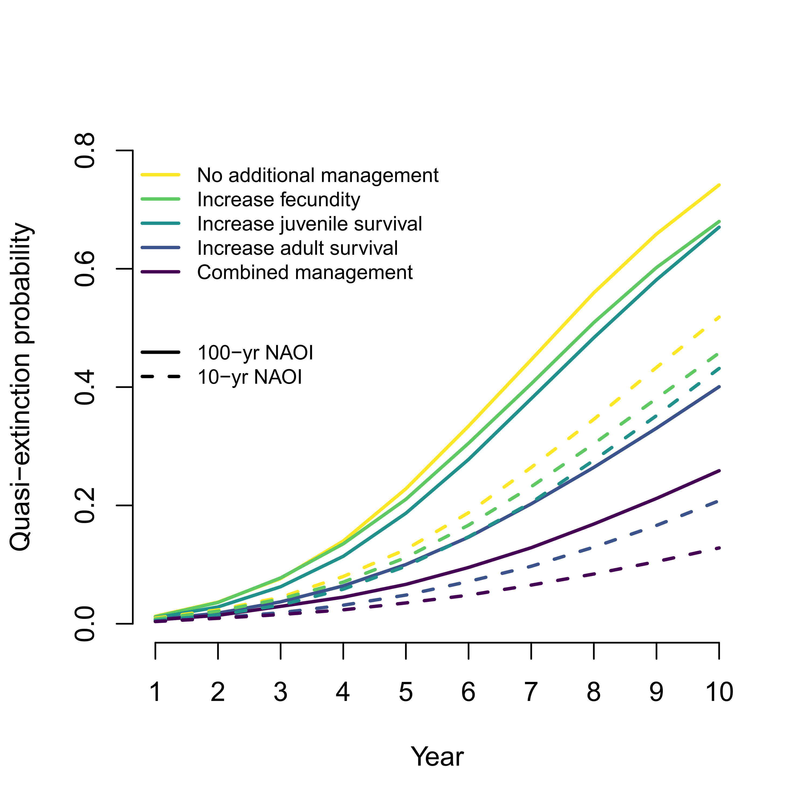
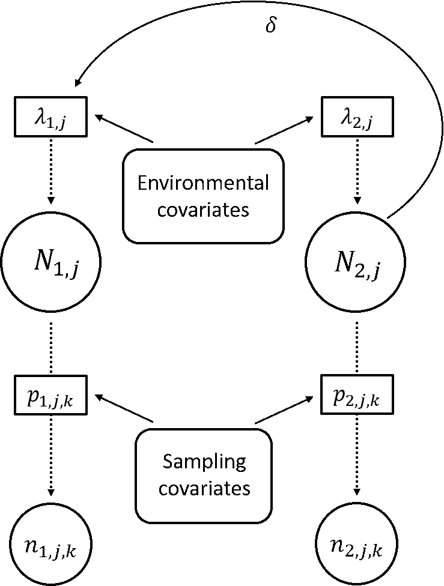
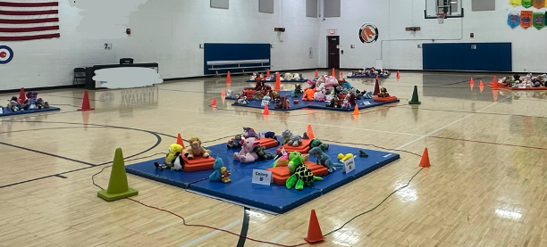

Zipkin Lab Code Archive
Note: this website is a living document. Projects will be added once the associated repos are complete (or near complete).
For projects in development, consult our Github organization and the lead
author's profile. You can watch our progress on the website
from this repo. Contact a study's lead author for additional details.

Data integration models
Population data are often collected by different sources, in different locations, or on different life stages. We are developing and applying novel techniques for integrating multiple data types to estimate the distribution, abundance, and dynamics of populations and predict future trajectories.
Davis_etal_2025_EcoApps | Farr_etal_2024_MEE |Davis_etal_2023_BioCons | Zylstra_etal_2022_GCB | Doser_etal_2021_MEE | Farr_etal_2021_Ecol | Zylstra_etal_2021_NEE | Saunders_etal_2019_PNAS | Saunders_etal_2019_Ecol | Saunders_etal_2018_JAE | Zipkin_etal_2017_Ecol
Davis_etal_2025_EcoApps
Evaluating environmental drivers and synchrony of Arctic shorebird demographic rates to inform conservation management
Citation - Davis, K.L., Lanctot, R.B., Saalfeld, S.T., and Zipkin, E.F. (2025) Evaluating environmental drivers and synchrony of Arctic shorebird demographic rates to inform conservation management. Ecological Applications. DOI: 10.1002/eap.70049
Abstract - We used an integrated population model to estimate demographic rates, synchrony, and population trends of Arctic‐breeding shorebirds within the context of climatic and management‐related changes. We estimated species‐specific breeding population sizes, adult survival rates, number of adults gained into the breeding population through recruitment, as well as the effects of environmental drivers on demographic traits for three shorebird species nesting in Alaska over an 18‐year study period. We found that the annual number of adults recruiting into the breeding population was important for maintaining local populations, and that local environmental factors and management regimes had strong effects on demographic rates.
Code and Data - Link to repo
Farr_etal_2024_MEE
Overcoming data gaps using integrated models to estimate migratory species’ dynamics during cryptic periods of the annual cycle
Citation - Farr M.T., Zylstra E.R., Ries L., and Zipkin E.F. (2024) Overcoming data gaps using integrated models to estimate migratory species’ dynamics during cryptic periods of the annual cycle. Methods in Ecology and Evolution. DOI: 10.1111/2041-210X.14282
Abstract - Environmental factors affect the population dynamics of migratory species throughout their annual cycles. However, identifying the spatiotemporal drivers of migratory species' abundances is difficult because of extensive gaps in monitoring data. Additionally, data for migratory species are often fragmented across multiple monitoring programs. We developed an integrated model that incorporates unstructured data during time periods and spatial locations when structured data are unavailable. Our integrated model can estimate population abundance at broad spatiotemporal extents despite structured data gaps during the annual cycle by leveraging opportunistic data.
Code and Data - Link to repo
Davis_etal_2023_BioCons
Breeding season management is unlikely to improve population viability of a data-deficient migratory species in decline
Citation - Davis K.L., Saunders S.P., Beilke S., Ford E.R., Fuller J., Landgraf A., and Zipkin E.F. (2023) Breeding season management is unlikely to improve population viability of a data-deficient migratory species in decline. Biological Conservation. DOI: 10.1016/j.biocon.2023.110104
Abstract - We used a coupled integrated population model-Bayesian population viability analysis to estimate demographic rates and population viability within the context of climatic and management-related changes for a data-deficient, declining population of black terns. We found that current conservation efforts during the breeding season are unlikely to reverse ongoing declines. Rather, interventions aimed at increasing adult survival are most likely to reduce quasi-extinction probability compared to management targeting other rates. Our results highlight the importance of enhanced monitoring and management efforts for migratory species during non-breeding periods.
Code and Data - Link to repo
Zylstra_etal_2022_GCB
Multi-season climate projections forecast declines in migratory monarch butterflies
Citation - Zylstra E.R., Neupane N., and Zipkin E.F. (2022) Multi-season climate projections forecast declines in migratory monarch butterflies. Global Change Biology. DOI: 10.1111/gcb.16349
Abstract - We combined a model for the eastern monarch population with climate projections to evaluate how monarchs are likely to respond to a range of potential scenarios over the next century. Our results reveal that forecasted changes in breeding-season climate are likely to lead to decreases in the size of the overwintering monarch population and shifts in the summer distribution of monarchs. Although climate uncertainties dominate long-term population forecasts, near-term forecasts can be improved by collecting targeted data to better understand relationships between climate variables and local monarch abundance.
Code and Data - Link to repo
Doser_etal_2021_MEE
Integrating automated acoustic vocalization data and point count surveys for estimation of bird abundance
Citation - Doser J.W., Finley A.O., Weed A.S., and Zipkin E.F. (2021) Integrating automated acoustic vocalization data and point count surveys for estimation of bird abundance. Methods in Ecology and Evolution. DOI: 10.1111/2041-210X.13578
Abstract - We develop an integrated modelling framework that combines bird point count survey data with acoustic recordings. Simulations revealed that combining acoustic and point count data improves accuracy and precision of abundance estimates compared to models using only one of these data types. Our case study revealed moderate support for a decline of the Eastern Wood-Pewee in VT, USA. Our integrated modelling approach combined dense acoustic data with fewer point count surveys to deliver reliable estimates of species abundance without the need for manual identification of acoustic vocalizations or a large number of repeated point count surveys.
Code and Data - Link to repo
Farr_etal_2021_Ecol
Integrating distance sampling and presence‐only data to estimate species abundance
Citation - Farr M.T., Green D.S., Holekamp K.E., and Zipkin E.F. (2021) Integrating distance sampling and presence‐only data to estimate species abundance. Ecology. DOI: 10.1002/ecy.3204
Abstract - We developed an integrated point process model to combine presence‐only and distance sampling data for estimation of spatially‐explicit abundance patterns. Simulations across a range of parameter values demonstrate that our model can recover estimates of biological covariates, but parameter accuracy and precision varied with the quantity of each data type. We applied our model to a case study of black‐backed jackals in the Masai Mara (Kenya) to evaluate the effects of environmental covariates and anthropogenic disturbance on abundance across the Reserve.
Code and Data - Link to repo
Zylstra_etal_2021_NEE
Changes in climate drive recent monarch butterfly dynamics
Citation - Zylstra E.R., Ries L., Neupane N., Saunders S.P., Ramírez M.I., Rendón-Salinas E., Oberhauser K.S., Farr M.T., and Zipkin E.F. (2021) Changes in climate drive recent monarch butterfly dynamics. Nature Ecology and Evolution. DOI: 10.1038/s41559-021-01504-1
Abstract - We use a hierarchical modeling approach, combining data from >18,000 systematic surveys to evaluate support for three hypotheses explaining monarch butterfly declines (loss of milkweed host plants from increased herbicide use, mortality during autumn migration and/or early-winter resettlement, and changes in breeding-season climate). Between 2004–2018, breeding-season weather was nearly seven times more important than other factors in explaining variation in summer population size, which was positively associated with the size of the subsequent overwintering population.
Code and Data - Link to repo
Saunders_etal_2019_PNAS
Multiscale seasonal factors drive the size of winter monarch colonies
Citation - Saunders S.P., Ries L., Neupane N., Ramirez M.I., Garcia-Serrano E., Rendon-Salinas E., and Zipkin E.F. (2019) Multiscale seasonal factors drive the size of winter monarch colonies. Proceedings of the National Academy of Sciences. DOI: 10.1073/pnas.1805114116
Abstract - We used a multiscale modeling approach to address whether conditions during autumn migration contributed to the decline of the eastern monarch butterfly population from 2004-2015. Our results suggest that environmental factors during — and at the culmination of — autumn migration, combined with summer population size, explain a substantial portion of temporal variation in monarch population dynamics during a time frame after which other major putative sources of mortality (host plant and winter habitat loss) have lessened considerably.
Code and Data - Link to repo
Saunders_etal_2019_Ecology
Disentangling data discrepancies with integrated population models
Citation - Saunders S.P., Farr M.T., Wright A.D., Bahlai C.A., Ribeiro J.W., Rossman S., Sussman A.L., Arnold T.W., and Zipkin E.F. (2019) Disentangling data discrepancies with integrated population models. Ecology. DOI: 10.1002/ecy.2714
Abstract - We develop an integrated population model to address dataset discrepancies that stem from spatiotemporal variability. As a case study, we present an analysis of a migratory species, the American woodcock, in which individual monitoring programs suggest differing population trends. To address this discrepancy, we synthesized several long-term datasets within an integrated modeling framework to estimate population trends, and link dynamic drivers across the full annual cycle and geographic extent of the species.
Code and Data - Link to repo
Saunders_etal_2018_JAE
Evaluating population viability and efficacy of conservation management using integrated population models
Citation - Saunders S.P., Cuthbert F.J., and Zipkin E.F. (2018) Evaluating population viability and efficacy of conservation management using integrated population models. Journal of Applied Ecology. DOI: 10.1111/1365-2664.13080
Abstract - We developed a coupled integrated population model-Bayesian population viability analysis (IPM-BPVA) to assess the (i) impact of demographic rates (survival, fecundity, immigration) on past population dynamics; (ii) population viability 10 years into the future; and (iii) efficacy of possible management strategies for the federally endangered Great Lakes piping plover population.
Code and Data - Link to repo
Zipkin_etal_2017_Ecology
Integrating count and detection–nondetection data to model population dynamics

Citation - Zipkin E.F., Rossman S., Yackulic C.B., Wiens J.D., Thorson J.T., Davis R.J., and Grant E.H.C. (2017) Integrating count and detection–nondetection data to model population dynamics. Ecology. DOI: 10.1002/ecy.1831
Abstract - We present a modeling framework for integrating detection–nondetection and count data to estimate population dynamics and abundance. We develop a series of simulations illustrating the relative value of count vs. detection–nondetection data. We also provide an empirical example of the model combining long-term detection–nondetection data with newly collected count data from a population of barred owls in the Pacific Northwest to examine the factors influencing population abundance over time.
Code and Data - Link to repo
Integrated community models
Integrated community models — an emerging framework in which multiple data sources for multiple species are analyzed simultaneously — offer opportunities to expand inferences beyond the single-species and single-data source approaches common in ecology. These models produce key information on the status, trends, and dynamics of species and biodiversity as a whole.
Leuenberger_etal_2025_PNAS | Gilbert_etal_2024_Ecol | Zipkin_etal_2023_JAE | Doser_etal_2022_MEE_B
Leuenberger_etal_2025_PNAS
Three decades of declines restructure butterfly communities in the Midwestern United States
Citation - Leuenberger W., Doser J.W., Belitz M.W., Ries L., Haddad N.M., Thogmartin W.M., Zipkin E.F. (2025) Three decades of decline restructure butterfly communities in the Midwestern United States. PNAS. DOI: 10.1073/pnas.2501340122
Abstract - Insects are declining worldwide, yet gaps remain in understanding how declines are distributed across species within communities. Using three decades of butterfly monitoring data in the Midwestern United States, we found that no butterfly species increased in abundance from 1992-2023. Fifty-nine out of 136 species declined (and no species increased) with losses distributed across all functional groups including residents, migrants, rare, and common species. Community composition changed such that abundance is now more even across species, driven by more severe losses in abundance – but not richness – of common species compared to rare species.
Code and Data - Link to repo
Gilbert_etal_2024_Ecol
A multispecies hierarchical model to integrate count and distance sampling data
Citation - Gilbert N.A., Blommel C.M., Farr M.T., Green D.S., Holekamp K.E., Zipkin E.F. (2024) A multispecies hierarchical model to integrate count and distance sampling data. Ecology. DOI: 10.1002/ecy.4326
Abstract - Integrated community models combine the benefits of integrated and community modeling approaches. Here, we developed a multi-species model that combines distance sampling and single-visit count data, in which information is shared among data sources (via a joint likelihood) and species (via a random effects structure) to estimate abundance patterns across a community. Simulations demonstrate that the model produced unbiased estimates of abundance and detection parameters even when detection probabilities varied between the data types. We applied the model to a herbivore community in the Masai Mara National Reserve (Kenya) and found considerable interspecific variation in response to local wildlife management practices.
Code and Data - Link to repo
Zipkin_etal_2023_JAE
Integrated community models: A framework combining multi-species data sources to estimate the status, trends, and dynamics of biodiversity

Citation - Zipkin E.F. , Doser J.W., Davis C.L., Leuenberger W., Ayebare S., Davis K.L. (2023) Integrated community models: A framework combining multi-species data sources to estimate the status, trends, and dynamics of biodiversity. Journal of Animal Ecology. DOI: 10.1111/1365-2656.14012
Abstract - Evaluating the dynamics of whole communities is critical to understanding the responses of biodiversity to ongoing environmental pressures. However, biodiversity data vary substantially in quantity and information content, requiring careful reconciliation. We highlight the emerging "integrated community modelling" (ICM) framework that combines both data integration and hierarchical community modelling to derive inferences on species- and community-level dynamics. We illustrate the framework with three worked examples to demonstrate how ICMs can be used to: extend the geographic scope when evaluating species distributions and richness; discern population and community trends over time; and estimate demographic rates and population growth for communities of sympatric species.
Code and Data - Link to repo
Doser_etal_2022_MEE_B
Integrated community occupancy models: A framework to assess occurrence and biodiversity dynamics using multiple data sources
Citation - Doser J.W., Leuenberger W., Sillet T.S., Hallworth M.T., and Zipkin E.F. (2022) Integrated community occupancy models: A framework to assess occurrence and biodiversity dynamics using multiple data sources. Methods in Ecology and Evolution. DOI: 10.1111/2041-210X.13811
Abstract - We present an "integrated community occupancy model" (ICOM) that unites principles of data integration and hierarchical community modeling to provide inferences on species-specific and community occurrence dynamics using multiple data sources. Using simulations and a case study, we show that ICOMs provide more precise estimates of occurrence dynamics compared to multi-species models using single data sources or integrated single-species models, offering an attractive approach to estimate species and biodiversity metrics.
Code and Data - Link to repo
Unmarked population models
We develop models to estimate the abundance, distribution, and demographic rates of populations using unmarked data, or data types that do not track individuals. These efforts allow us to quantitatively evaluate important life history parameters with less sampling effort than is traditionally required with mark-recapture studies.
Ayebare_etal_2025_Ecosphere | Doser_etal_2025_JABES | Doser_etal_2024_GEB | Farr_etal_2022_ConsBio | DiRenzo_etal_2019_EcolAndEvol | DiRenzo_etal_2018_EcoApps | Saunders_etal_2018_Ecog | Rossman_etal_2016_Ecol | Saunders_etal_2016_GEB | Zipkin_etal_2014_Ecol | Zipkin_etal_2014_EcolAndEvol
Ayebare_etal_2025_Ecosphere
Improving population analysis using indirect count data: a case study of chimpanzees and elephants
×

Citation - Ayebare S., Gilbert, N.A., Plumptre, A.J., Nampindo, S., and Zipkin E.F. (2025) Improving population analysis using indirect count data: a case study of chimpanzees and elephants. Ecosphere. DOI: 10.1002/ecs2.70150
Abstract - Estimating density is challenging for species that are elusive or occur in habitats with limited visibility. We describe a modified hierarchical distance sampling model that maximizes the information content of indirect count data using Bayesian inference. We estimated a 0.98 probability that chimpanzee density in western Uganda declined by at least 10% and a 0.99 probability that elephant density increased by 50% from 2007 to 2021. We recommend applying our modified hierarchical distance sampling model to account for spatial variation, assess population change, and estimate the decay rate of animal signs to obtain accurate and presise estimates of density.
Code and Data - Link to repo
Doser_etal_2025_JABES
Modeling complex species-environment relationships through spatially-varying coefficient occupancy models
×

Citation - Doser J.W., Finley A.O., Saunders S.P., Kéry M., Weed A.S., and Zipkin E.F. (2025) Modeling complex species-environment relationships through spatially-varying coefficient occupancy models. Journal of Agricultural, Biological and Environmental Statistics. DOI: 10.1007/s13253-023-00595-6
Abstract - Occupancy models can quantify spatial variation in species distributions while accounting for observational biases. However, the common assumption that a single set of regression coefficients can adequately explain species-environment relationships is often unrealistic across large spatial domains. We develop computationally-efficient single-species and multi-species spatially-varying coefficient occupancy models. Our models are particularly relevant for quantifying species-environment relationships using data from large-scale monitoring programs, which are increasingly prevalent for answering macroscale ecological questions regarding wildlife responses to global change.
Code and Data - Link to repo
Doser_etal_2024_GEB
Guidelines for the use of spatially-varying coefficients in species distribution models
×

Citation - Doser J.W., Kéry M., Saunders S.P., Finley A.O., Bateman B.L., Grand J., Reault S., Weed A.S., and Zipkin E.F. (2024) Guidelines for the use of spatially-varying coefficients in species distribution models. Global Ecology and Biogeography. DOI: 10.1111/geb.13814
Abstract - Species distribution models (SDMs) are increasingly applied across macroscales using detection-nondetection data. Spatially-varying coefficient (SVC) models can readily account for variability in the effects of environmental covariates. Here we demonstrate the inferential benefits of SVC SDMs, with a particular focus on how this approach can be used to generate and test ecological hypotheses regarding the drivers of spatial variability in population trends and species-environment relationships. These applications display the utility of SVC SDMs to assess the environmental factors that drive species distributions across both local and broad scales.
Code and Data - Link to repo
Farr_etal_2022_ConsBio
Quantifying the conservation status and abundance trends of wildlife communities with detection-nondetection data
×

Citation - Farr M.T., O'Brien T., Yackulic C.B., and Zipkin E.F. (2022) Quantifying the conservation status and abundance trends of wildlife communities with detection-nondetection data. Conservation Biology. DOI: 10.1111/cobi.13934
Abstract - We developed a "multispecies dynamic N-occupancy model" using detection-nondetection data to estimate abundance and demographic rate parameters at species- and community-levels. To validate our model, we conducted a simulation study and found that our multispecies model outperformed comparable single-species models in many cases. We apply our model to a case study using camera trap data across tropical equatorial Africa to evaluate the statuses and trends of a forest-dwelling antelope community.
Code and Data - Link to repo
DiRenzo_etal_2019_EcolAndEvol
Disease structured N-Mixture models: a practical guide to model disease dynamics using count data
Citation - DiRenzo G.V., Che-Castaldo C., Saunders S.P., Grant E.H.C., and Zipkin E.F. (2019) Disease sturcutred N-Mixture models: a practical guide to model disease dynamics using count data. Ecology and Evolution. DOI: 10.1002/ece3.48
Abstract - We review the challenges of modeling disease dynamics and describe how (disease-structured) N-mixture models can be used to estimate common metrics, including pathogen prevalence, transmission, and recovery rates while accounting for imperfect host and pathogen detection. We also offer a perspective on future research directions at the intersection of quantitative and disease ecology, including the estimation of false positives in pathogen presence, spatially-explicit disease-structured N-mixture models, and the integration of other data types with count data to inform disease dynamics.
Code and Data - Link to repo
DiRenzo_etal_2018_EcoApps
Eco-evolutionary rescue promotes host-pathogen coexistence

Citation - DiRenzo G.V., Zipkin E.F., Grant E.H.C., Royle J.A., Longo A.V., Zamudio K.R., and Lips K.R. (2018) Eco-evolutionary rescue promotes host-pathogen coexistence. Ecological Applications. DOI: 10.1002/eap.1792
Abstract - Using a novel disease-structured N-mixture model, we evaluate empirical support for three host-pathogen coexistence hypotheses (source-sink, eco-evolutionary rescue, and spatial variation in pathogen transmission) in a Neotropical amphibian community decimated by Batrachochytrium dendrobatidis (i.e. chydrid fungus) six years earlier. We found that the primary driver of host-pathogen coexistence was eco-evolutionary rescue, as evidenced by the similar amphibian survival and recruitment rates between infected and uninfected hosts.
Code and Data - Link to repo
Saunders_etal_2018_Ecography
Local and cross-seasonal associations of climate and land use with abundance of monarch butterflies Danaus plexippus

Citation - Saunders S.P., Ries L., Oberhauser K.S., Thogmartin W.E., and Zipkin E.F. (2018) Local and cross‐seasonal associations of climate and land use with abundance of monarch butterflies. Ecography. DOI: 10.1111/ecog.02719
Abstract - We modeled site-specific summer abundance of monarch butterflies
at sites across Illinois to assess relative associations of monarch abundance with
climate and land use variables during the winter, spring, and summer stages of their annual cycle. We estimate
abundance as a function of local climate, site-specific crop cover, and county-level herbicide application as well as cross-seasonal covariates, including annual abundance of wintering monarchs in Mexico and climate conditions during spring migration and breeding in Texas.
Code and Data - Link to repo
Rossman_etal_2016_Ecology
Dynamic N-occupancy models: estimating demographic rates and local abundance from detection-nondetection data

Citation - Rossman S., Yackulic C.B., Saunders S.P., Reid J., Davis R., and Zipkin E.F. (2016) Dynamic N-occupancy models: estimating demographic rates and local abundance from detection-nondetection data. Ecology. DOI: 10.1002/ecy.1598
Abstract - We introduce a new model (“Dynamic N-occupancy model”) capable of providing accurate estimates of local abundance,
population gains, and survival probabilities while accounting for imperfect detection using only
detection-nondetection data. We examine the data
requirements, including the number of years and survey sites needed, for unbiased and precise estimation of parameters. We apply
our model to estimate spatio-temporal heterogeneity in abundances of barred owls within a recently invaded region in Oregon.
Code and Data - Link to repo
Saunders_etal_2016_GEB
Evaluating confidence in climate-based predictions of population change in a migratory species
Citation - Saunders S.P., Ries L., Oberhauser K.S., and Zipkin E.F. (2016) Evaluating confidence in climate-based predictions of population change in a migratory species. Global Ecology and Biogeography. DOI: 10.1111/geb.12461
Abstract - Using negative binomial regression models and relevant local and regional scale covariates,
we evaluate spatiotemporal synchrony between monarch butterflies in the two states (OH and IL). We also develop
a novel quantitative assessment approach to determine the temporal predictive strength of our model with
Bayesian P-values.
Code and Data - Link to repo
Zipkin_etal_2014_Ecology
Modeling structured population dynamics using data from unmarked individuals

Citation - Zipkin E.F., Thorson J.T., See K., Lynch H.J., Grant E.H.C., Kanno Y., Chandler R.B., Letcher B.H., and Royle J.A. (2014) Modeling structured population dynamics using data from unmarked individuals. Ecology. DOI: 10.1890/13-1131.1
Abstract - We extend N-mixture models to demonstrate how demographic parameters and abundance can be estimated for
structured populations using only stage-structured count data. We present a range of simulations to illustrate the data
requirements, including the number of years and locations necessary for accurate and precise parameter estimates. We apply
our modeling framework to a population of northern dusky salamanders in the mid-Atlantic region and find that the population
is unexpectedly declining.
Code and Data - Link to repo
Zipkin_etal_2014_EcolAndEvol
Inferences about population dynamics from count data using multistate models: a comparison to capture–recapture approaches

Citation - Zipkin E.F., Sillett T.S., Grant E.H.C., Chandler R.B., and Royle J.A. (2014) Inferences about population dynamics from count data using multistate models: a comparison to capture–recapture approaches. Ecology and Evolution. DOI: 10.1002/ece3.942
Abstract - We extend recently developed multistate, open population N-mixture model to account for the case where not
all individuals can be assigned to a state during sampling. Using only state-specific count data, we show how our model can be
used to estimate local population abundance, as well as density-dependent recruitment rates and state-specific survival in a
black-throated blue warbler population and compare our results to those estimated with capture–recapture data.
Code and Data - Link to repo
Community analyses
Improving population analysis using indirect count data: a case study of chimpanzees and elephants
Citation - Ayebare S., Gilbert, N.A., Plumptre, A.J., Nampindo, S., and Zipkin E.F. (2025) Improving population analysis using indirect count data: a case study of chimpanzees and elephants. Ecosphere. DOI: 10.1002/ecs2.70150
Abstract - Estimating density is challenging for species that are elusive or occur in habitats with limited visibility. We describe a modified hierarchical distance sampling model that maximizes the information content of indirect count data using Bayesian inference. We estimated a 0.98 probability that chimpanzee density in western Uganda declined by at least 10% and a 0.99 probability that elephant density increased by 50% from 2007 to 2021. We recommend applying our modified hierarchical distance sampling model to account for spatial variation, assess population change, and estimate the decay rate of animal signs to obtain accurate and presise estimates of density.
Code and Data - Link to repo
Modeling complex species-environment relationships through spatially-varying coefficient occupancy models
Citation - Doser J.W., Finley A.O., Saunders S.P., Kéry M., Weed A.S., and Zipkin E.F. (2025) Modeling complex species-environment relationships through spatially-varying coefficient occupancy models. Journal of Agricultural, Biological and Environmental Statistics. DOI: 10.1007/s13253-023-00595-6
Abstract - Occupancy models can quantify spatial variation in species distributions while accounting for observational biases. However, the common assumption that a single set of regression coefficients can adequately explain species-environment relationships is often unrealistic across large spatial domains. We develop computationally-efficient single-species and multi-species spatially-varying coefficient occupancy models. Our models are particularly relevant for quantifying species-environment relationships using data from large-scale monitoring programs, which are increasingly prevalent for answering macroscale ecological questions regarding wildlife responses to global change.
Code and Data - Link to repo
Guidelines for the use of spatially-varying coefficients in species distribution models
Citation - Doser J.W., Kéry M., Saunders S.P., Finley A.O., Bateman B.L., Grand J., Reault S., Weed A.S., and Zipkin E.F. (2024) Guidelines for the use of spatially-varying coefficients in species distribution models. Global Ecology and Biogeography. DOI: 10.1111/geb.13814
Abstract - Species distribution models (SDMs) are increasingly applied across macroscales using detection-nondetection data. Spatially-varying coefficient (SVC) models can readily account for variability in the effects of environmental covariates. Here we demonstrate the inferential benefits of SVC SDMs, with a particular focus on how this approach can be used to generate and test ecological hypotheses regarding the drivers of spatial variability in population trends and species-environment relationships. These applications display the utility of SVC SDMs to assess the environmental factors that drive species distributions across both local and broad scales.
Code and Data - Link to repo
Quantifying the conservation status and abundance trends of wildlife communities with detection-nondetection data
Citation - Farr M.T., O'Brien T., Yackulic C.B., and Zipkin E.F. (2022) Quantifying the conservation status and abundance trends of wildlife communities with detection-nondetection data. Conservation Biology. DOI: 10.1111/cobi.13934
Abstract - We developed a "multispecies dynamic N-occupancy model" using detection-nondetection data to estimate abundance and demographic rate parameters at species- and community-levels. To validate our model, we conducted a simulation study and found that our multispecies model outperformed comparable single-species models in many cases. We apply our model to a case study using camera trap data across tropical equatorial Africa to evaluate the statuses and trends of a forest-dwelling antelope community.
Code and Data - Link to repo
Disease structured N-Mixture models: a practical guide to model disease dynamics using count data
Citation - DiRenzo G.V., Che-Castaldo C., Saunders S.P., Grant E.H.C., and Zipkin E.F. (2019) Disease sturcutred N-Mixture models: a practical guide to model disease dynamics using count data. Ecology and Evolution. DOI: 10.1002/ece3.48
Abstract - We review the challenges of modeling disease dynamics and describe how (disease-structured) N-mixture models can be used to estimate common metrics, including pathogen prevalence, transmission, and recovery rates while accounting for imperfect host and pathogen detection. We also offer a perspective on future research directions at the intersection of quantitative and disease ecology, including the estimation of false positives in pathogen presence, spatially-explicit disease-structured N-mixture models, and the integration of other data types with count data to inform disease dynamics.
Code and Data - Link to repo
Eco-evolutionary rescue promotes host-pathogen coexistence
Citation - DiRenzo G.V., Zipkin E.F., Grant E.H.C., Royle J.A., Longo A.V., Zamudio K.R., and Lips K.R. (2018) Eco-evolutionary rescue promotes host-pathogen coexistence. Ecological Applications. DOI: 10.1002/eap.1792
Abstract - Using a novel disease-structured N-mixture model, we evaluate empirical support for three host-pathogen coexistence hypotheses (source-sink, eco-evolutionary rescue, and spatial variation in pathogen transmission) in a Neotropical amphibian community decimated by Batrachochytrium dendrobatidis (i.e. chydrid fungus) six years earlier. We found that the primary driver of host-pathogen coexistence was eco-evolutionary rescue, as evidenced by the similar amphibian survival and recruitment rates between infected and uninfected hosts.
Code and Data - Link to repo
Local and cross-seasonal associations of climate and land use with abundance of monarch butterflies Danaus plexippus
Citation - Saunders S.P., Ries L., Oberhauser K.S., Thogmartin W.E., and Zipkin E.F. (2018) Local and cross‐seasonal associations of climate and land use with abundance of monarch butterflies. Ecography. DOI: 10.1111/ecog.02719
Abstract - We modeled site-specific summer abundance of monarch butterflies at sites across Illinois to assess relative associations of monarch abundance with climate and land use variables during the winter, spring, and summer stages of their annual cycle. We estimate abundance as a function of local climate, site-specific crop cover, and county-level herbicide application as well as cross-seasonal covariates, including annual abundance of wintering monarchs in Mexico and climate conditions during spring migration and breeding in Texas.
Code and Data - Link to repo
Dynamic N-occupancy models: estimating demographic rates and local abundance from detection-nondetection data
Citation - Rossman S., Yackulic C.B., Saunders S.P., Reid J., Davis R., and Zipkin E.F. (2016) Dynamic N-occupancy models: estimating demographic rates and local abundance from detection-nondetection data. Ecology. DOI: 10.1002/ecy.1598
Abstract - We introduce a new model (“Dynamic N-occupancy model”) capable of providing accurate estimates of local abundance, population gains, and survival probabilities while accounting for imperfect detection using only detection-nondetection data. We examine the data requirements, including the number of years and survey sites needed, for unbiased and precise estimation of parameters. We apply our model to estimate spatio-temporal heterogeneity in abundances of barred owls within a recently invaded region in Oregon.
Code and Data - Link to repo
Evaluating confidence in climate-based predictions of population change in a migratory species
Citation - Saunders S.P., Ries L., Oberhauser K.S., and Zipkin E.F. (2016) Evaluating confidence in climate-based predictions of population change in a migratory species. Global Ecology and Biogeography. DOI: 10.1111/geb.12461
Abstract - Using negative binomial regression models and relevant local and regional scale covariates, we evaluate spatiotemporal synchrony between monarch butterflies in the two states (OH and IL). We also develop a novel quantitative assessment approach to determine the temporal predictive strength of our model with Bayesian P-values.
Code and Data - Link to repo
Modeling structured population dynamics using data from unmarked individuals
Citation - Zipkin E.F., Thorson J.T., See K., Lynch H.J., Grant E.H.C., Kanno Y., Chandler R.B., Letcher B.H., and Royle J.A. (2014) Modeling structured population dynamics using data from unmarked individuals. Ecology. DOI: 10.1890/13-1131.1
Abstract - We extend N-mixture models to demonstrate how demographic parameters and abundance can be estimated for structured populations using only stage-structured count data. We present a range of simulations to illustrate the data requirements, including the number of years and locations necessary for accurate and precise parameter estimates. We apply our modeling framework to a population of northern dusky salamanders in the mid-Atlantic region and find that the population is unexpectedly declining.
Code and Data - Link to repo
Inferences about population dynamics from count data using multistate models: a comparison to capture–recapture approaches
Citation - Zipkin E.F., Sillett T.S., Grant E.H.C., Chandler R.B., and Royle J.A. (2014) Inferences about population dynamics from count data using multistate models: a comparison to capture–recapture approaches. Ecology and Evolution. DOI: 10.1002/ece3.942
Abstract - We extend recently developed multistate, open population N-mixture model to account for the case where not all individuals can be assigned to a state during sampling. Using only state-specific count data, we show how our model can be used to estimate local population abundance, as well as density-dependent recruitment rates and state-specific survival in a black-throated blue warbler population and compare our results to those estimated with capture–recapture data.
Code and Data - Link to repo
Assessing the impacts of climate and habitat on communities of species is increasingly important as abiotic conditions continue to change. Yet, most data collection techniques do not produce enough data for analyses on a majority of species observed during sampling. We develop multi-species models to estimate the effects of environmental covariates on all species within a community, including those that are rare or elusive.
Gilbert_etal_2025_Ecography | Ayebare_etal_2023_ProcB | Cabodevilla_etal_2022_AgEcosEnv | Wright_etal_2022_EcoApps | Doser_etal_2021_EcoApps | Wright_etal_2020_LandEcol | Zipkin_etal_2020_Science | Farr_etal_2019_EcoApps | Brodie_etal_2018_Biotr | Ribeiro_etal_2018_EcoApps | Example model code
Gilbert_etal_2025_Ecography
Idiosyncratic spatial scaling of biodiversity–disease relationships
Citation - Gilbert N.A., DiRenzo G.V., and Zipkin E.F. (2025) Idiosyncratic spatial scaling of biodiversity–disease relationships. Ecography. DOI: 10.1111/ecog.07541
Abstract - We evaluated the spatial scaling of relationships between host biodiversity and Borrelia infection prevalence in small mammals. We applied a multispecies, spatially-stratified capture–recapture model to a trapping dataset to estimate five small mammal biodiversity metrics. We found that relationships between Borrelia infection prevalence and biodiversity did vary when biodiversity was quantified at the different spatial scales. Our results indicate that a focus on single spatial scales when assessing the influence of biodiversity on disease risk provides an incomplete picture of the complexity of disease dynamics in ecosystems.
Code and Data - Link to repo
Ayebare_etal_2023_ProcB
An environmental habitat gradient and within-habitat segregation enable co-existence of ecologically similar bird species
Citation - Ayebare S., Doser J.W., Plumptre A.J., Owiunji I., Mugabe H., and Zipkin E.F. (2023) An environmental habitat gradient and within-habitat segregation enable co-existence of ecologically similar bird species Proceedings of the Royal Society B. DOI: 10.1098/rspb.2023.0467
Abstract - We evaluated coexistence mechanisms of ecologically similar bird species in a biodiversity-rich transboundary montane forest in east-central Africa by computing niche overlap indices. Coexistence of ecologically similar species within a highly diverse montane forest was determined primarily by abiotic factors (e.g. environmental elevation gradient) and secondarily by biotic factors (e.g. vertical and horizontal segregation within habitats). Partitioning across multiple levels of spatial organization is a key driver of coexistence in diverse communities.
Code and Data - Link to repo
Cabodevilla_etal_2022_AgEcosEnv
The implementation of irrigation leads to declines in farmland birds

Citation - Cabodevilla X., Wright A.D., Villanua D., Arroyo B., and Zipkin E.F. (2022) The implementation of irrigation leads to declines in farmland birds. Agriculture, Ecosystems and Environment. DOI: 10.1016/j.agee.2021.1077011
Abstract - We evaluated the impact of irrigation on bird species occurrence patterns using a Before-After Control-Impact design. We analyzed a 13-year dataset within an agricultural area in northern Spain using a hierarchical multi-species occurrence model. Our findings suggest that irrigation can lead to substantial changes in local bird communities, with less diversity and fewer farmland species.
Code and Data - Link to repo
Wright_etal_2022_EcoApps
A comparison of monitoring designs to assess wildlife community parameters across spatial scales
Citation - Wright A.D., Grant, E.H.C., and Zipkin E.F. (2022) A comparison of monitoring designs to assess wildlife community parameters across spatial scales. Ecological Applications. DOI: 10.1002/eap.2621
Abstract - Using an amphibian monitoring program that spans a network of U.S. National Parks as a motivating example, we evaluated and compared the ability of five monitoring designs - stratified random, weighted effort, indicator unit, rotating panel, and split panel - to recover parameter values that describe the status (occupancy), trends (change in occupancy), and drivers (spatially-varying covariate and an autologistic term) of wildlife communities at two spatial scales.
Code and Data - Link to repo
Doser_etal_2021_EcoApps
Trends in bird abundance differ among protected forests but not bird guilds
Citation - Doser J.W., Weed A.S, Zipkin E.F., Miller K.M., and Finley A.O. (2021) Trends in bird abundance differ among protected forests but not bird guilds. Ecological Applications. DOI: 10.1002/eap.2377
Abstract - We developed a multi-species, multi-region removal sampling model that shares information across species and parks to enable inference on rare species and sparsely sampled parks. Using the model, we assessed abundance trends for 106 bird species in a network of eight national park forests located within the northeast USA from 2006-2019 to evaluate the effects of local forest structure. Trends in bird abundance over time varied widely across parks, but species showed similar trends within parks.
Code and Data - Link to repo
Wright_etal_2020_LandEcol
A hierarchical analysis of habitat area, connectivity, and quality on amphibian diversity across spatial scales
Citation - Wright A.D., Grant E.H.C., and Zipkin E.F. (2020) A hierarchical analysis of habitat area, connectivity, and quality on amphibian diversity across spatial scales. Landscape Ecology. DOI: 10.1007/s10980-019-00963-z
Abstract - We developed a multi-region community occupancy model to analyze 13 years of amphibian monitoring data within the National Capital Region, a network of U.S. National Parks. To examine the influence of fragmentation on biodiversity across scales, we (1) estimated the effects of habitat area, connectivity, and quality at both local (i.e. community) and regional (i.e. metacommunity) scales; and (2) evaluated the direction, magnitude, and precision of these estimates at both spatial scales. Our hierarchical framework can help managers and policymakers elucidate the relevant spatial scale(s) to target conservation efforts.
Code and Data - Link to repo
Zipkin_etal_2020_Science
Tropical snake diversity collapses after widespread amphibian loss
Citation - Zipkin E.F., DiRenzo G.V., Ray J.M., Rossman S., and Lips K.R. (2020) Tropical snake diversity collapses after widespread amphibian loss. Science. DOI: 10.1126/science.aay5733
Abstract - We document the collapse of a snake community after an epizootic lead to the catastrophic loss of amphibians, a food source for snakes. Following mass mortality of amphibians, the snake community contained fewer species and was more homogeneous across the study site with several species in poorer body condition, despite no other systematic changes in the environment. The demise of the snake community demonstrates the repercussive consequences of the biodiversity crisis and calls attention to the invisible declines of rare and data deficient species.
Code and Data - Link to repo
Farr_etal_2019_EcoApps
Multi-species modeling reveals variable responses of African carnivores to management alternatives and anthropogenic disturbance

Citation - Farr M.T., Green D.S., Holekamp K.E., Roloff G.J., and Zipkin E.F. (2019) Multi-species modeling reveals variable responses of African carnivores to management alternatives and anthropogenic disturbance. Ecological Applications. DOI: 10.1002/eap.1845
Abstract - Using a hierarchical multi-species modeling approach, we examined the effects of alternative management strategies (active vs. passive enforcement of regulations) on carnivore abundances and group sizes at both species and community levels in the Masai Mara National Reserve, Kenya. We estimated the effects of management regime on abundance and group size for 11 observed carnivore species at both species and community levels.
Code and Data - Link to repo
Brodie_etal_2018_Biotropica
Models for assessing local‐scale co‐abundance of animal species while accounting for differential detectability and varied responses to the environment
Citation - Brodie J.F., Helmy O.E., Mohd-Azlan J., Granados A., Bernard H., Giordano A.J., and Zipkin E.F. (2018) Models for assessing local‐scale co‐abundance of animal species while accounting for differential detectability and varied responses to the environment. Biotropica. DOI: 10.1111/btp.12500
Abstract - We developed a modeling framework to assess how the local abundance of one species influences the local abundance of a potential competitor while explicitly accounting for differential responses to environmental conditions. Our models also incorporate imperfect detection as well as abundance estimation error for both species. We applied the model to four pairs of mammal species in Borneo (civet, macaque, muntjac deer, and porcupine), surveyed by extensive and spatially widespread camera trapping.
Code and Data - Link to repo
Ribeiro_etal_2018_EcoApps
Effects of agriculture and topography on tropical amphibian species and communities
Citation - Ribeiro Jr. J.W., Siqueira T., Brejão G.L., and Zipkin E.F. (2018) Effects of agriculture and topography on tropical amphibian species and communities. Ecological Applications. DOI: 10.1002/eap.1741
Abstract - We quantify the response of amphibian species to landscape-scale characteristics in streams within the Brazilian Atlantic Forest. We developed a hierarchical community occupancy model to quantify the influence of landscape-scale characteristics (forest cover, agriculture, catchment area, stream density and slope) on amphibian occurrence while accounting for imperfect detection using two survey methods (an active and a passive approach). Our findings suggest that small streams and flat topography lead to higher amphibian occurrence probabilities for many species.
Code and Data - Link to repo
Example model code
Hierarchical community model example model and code
Based on work from Zipkin et al. 2010
Citation - Zipkin E.F., Royle J.A., Dawson D.K., and Bates S. (2010) Multi-species occurrence models to evaluate the effects of conservation and management actions. Biological Conservation. DOI: 10.1016/j.biocon.2009.11.016
Abstract - The hierarchical community model is a multi-species approach to obtain community information, such as species or assemblage richness, by estimating individual species occurrence and detection probabilities. We provide example code and data based off of Zipkin et al. 2010 (Biological Conservation) to demonstrate how to implement multi-species hierarchical models with and without covariates.
Other projects
This section includes analyses and models that fall outside the subject range of the other headers.
Doser_etal_2024_MEE | Gilbert_etal_2024_Ecol | Williams_etal_2024_NatComm | Davis_etal_2022_EcolAndEvol | Doser_etal_2022_MEE_A | Bahlai_Zipkin_2020_PLOSComputBiol | Green_etal_2019_PTRS | Sussman_etal_2019_MEE | Rossman_etal_2016_EcolAndEvol
Doser_etal_2024_MEE
spAbundance: An R package for single-species and multi-species spatially explicit abundance models
Citation - Doser J.W., Finley A.O., Kéry M., and Zipkin E.F. (2024) spAbundance: An R package for single-species and multi-species spatially explicit abundance models. Methods in Ecology and Evolution. DOI: 10.1111/2041-210X.14332
Abstract - The spAbundance R package provides a user-friendly platform to fit spatially explicit single-species and multi-species hierarchical distance sampling models, N-mixture models, and generalized linear mixed models using a Bayesian approach. We highlight spAbundance functionality with three vignettes and three case studies. The package can serve as a tool for ecologists and conservation practitioners to generate inferences and predictions on the spatial drivers of abundance in populations and communities.
Code and Data - Link to repo
Gilbert_etal_2024_Ecol
A century of statistical Ecology
Citation - Gilbert N.A., Amaral B.R., Smith O.M., Williams P.J., Ceyzyk S., Ayebare S., Davis K.L., Leuenberger W., Doser J.W., Zipkin E.F. (2024) A century of statistical Ecology. Ecology. DOI: 10.1002/ecy.4283
Abstract - Over the last century, the journal Ecology has published many innovative statistical ecology papers that introduced novel modeling methods and provided accessible guides to statistical best practices. In this paper, we reflect on Ecology's history and its role in the emergence of the subdiscipline of statistical ecology, which we define as the study of ecological systems using mathematical equations, probability, and empirical data. We showcase 36 influential statistical ecology papers and, in so doing, comment on the evolution of the field and what the future might hold.
Code and Data - Link to repo
Williams_etal_2024_NatComm
Deep biogeographic barriers explain divergent global vertebrate communities
Citation - Williams P.J., Zipkin E.F., and Brodie J.F. (2024) Deep biogeographic barriers explain divergent global vertebrate communities. Nature Communications. DOI: 10.1038/s41467-024-46757-z
Abstract - Biogeographic history can lead to variation in biodiversity across regions, but it remains unclear how isolation among communities may lead to differences in biodiversity. Here, we use a novel continuous measure of biogeographic distance, phylobetadiversity, to analyze the influence of biogeographic isolation on the taxonomic and functional diversity of global mammal and bird assemblages. Our results elucidate how long-lasting biogeographic barriers can lead to divergent diversity patterns, against the backdrop of environmental determinism that predominantly structures diversity across most of the world.
Code and Data - Link to repo
Davis_etal_2022_EcolAndEvol
Errors in aerial survey count data: Identifying pitfalls and solutions
Citation - Davis K.L., Silverman E.D., Sussman A.L., Wilson R.R., and Zipkin E.F. (2022) Errors in aerial survey count data: Identifying pitfalls and solutions. Ecology and Evolution. DOI: 10.1002/ece3.8733
Abstract - Aerial surveys are an efficient survey platform for surveying wildlife population across large spatial extents; however, problems common to aerial survey data collection can act to bias inferences. Through an extensive review of the aerial survey literature and a case study focused on waterbird data, we evaluated how common problems encountered in the data (including non-detection, counting error, and species misidentification) can manifest, the potential difficulties conferred, and the history of how these challenges have been addressed. Our results illustrate how each issue can act to bias inferences, highlighting the importance of considering individual methods for mitigating potential problems separately during survey design and analysis.
Code and Data - Link to repo
Doser_etal_2022_MEE_A
spOccupancy: An R package for single-species, multi-species, and integrated spatial occupancy models
×

Citation - Doser J.W., Finley A.O., Kéry M., and Zipkin E.F. (2022) spOccupancy: An R package for single-species, multi-species, and integrated spatial occupancy models. Methods in Ecology and Evolution. DOI: 10.1111/2041-210X.13897
Abstract - The spOccupancy package provides a user-friendly platform to fit a variety of single and multi-species occupancy models, making it straightforward to address detection biases and spatial autocorrelation in species distribution models using detection-nondetection data sets. spOccupancy contains functions for data simulation, model fitting, model validation (by posterior predictive checks), model comparison (using information criteria and k-fold cross-validation), and out-of-sample prediction.
Code and Data - Link to repo
Bahlai_Zipkin_2020_PLOSComputBiol
The Dynamic Shift Detector: An algorithm to identify changes in parameter values governing populations
Citation - Bahlai C.A. and Zipkin E.F. (2020) The Dynamic Shift Detector: An algorithm to identify changes in parameter values governing populations. PLOS Computational Biology. DOI: 10.1371/journal.pcbi.1007542
Abstract - The “Dynamic Shift Detector” is an algorithm to identify changes in parameter values governing temporal fluctuations in populations with nonlinear dynamics. It uses an iterative approach to fitting subsets of time series data, then ranks the fit of break point combinations using model selection, assigning a relative weight to each break. In this paper, we examined the performance of the Dynamic Shift Detector with simulations and two case studies: one examining an invading populuation and the other focused on a declining population.
Code and Data - Link to repo
Green_etal_2019_PTRS
Can hyena behaviour provide information on abundances of sympatric carnivores?
Citation - Green D.S.*, Farr M.T.*, Holekamp K.E., and Zipkin E.F. (2019) Can hyena behaviour provide information on population trends of sympatric carnivores? Philosophical Transactions of the Royal Society B. DOI: 10.1098/rstb.2018.0052
*Authors contributed equally.
Abstract - We inquire whether hyena behaviours correlate with changes in abundance of hyenas or other carnivore species in the Masai Mara National Reserve (Kenya). We find that changes in spotted hyena behaviour in disturbed areas can be linked to changes in their demography (vignette 1) and that declines in lion–hyena interactions may be caused by competitive release of hyenas from declining lion abundance (vignette 2). We also demonstrate that in some cases, hyena behaviour and demography is linked to the density and distribution of sympatric carnivores species (vignettes 3 and 4).
Code and Data - Link to repo
Sussman_etal_2019_MEE
A comparative analysis of common methods to identify waterbird hotspots
Citation - Sussman A.L., Gardner B., Adams E.M., Salas L., Kenow K.P., Luukkonen D.R., Monfils M.J., Mueller W.P., Williams K.A., Leduc-Lapierre M., and Zipkin E.F. (2019) A comparative analysis of common methods to identify waterbird hotspots. Methods in Ecology and Evolution. DOI: 10.1111/2041-210X.13209
Abstract - Identification of biodiversity "hotspots" is subjective and various methods can lead to different conclusions. We present the results of a comparative analysis of recent approaches (kernel density estimation, Getis-Ord Gi*, hotspot persistence, and hotspots conditional on presence) for identifying waterbird hotspots. We applied each of the methods to aerial-survey waterbird count data collected in the Great Lakes. Our results indicate that formal hotspot analysis frameworks do not always lead to the same conclusions.
Code and Data - Link to repo
Rossman_etal_2016_EcolAndEvol
Beyond carbon and nitrogen: guidelines for estimating three-dimensional isotopic niche space

Citation - Rossman S., Ostrom P.H., Gordon F., and Zipkin E.F. (2016) Beyond carbon and nitrogen: guidelines for estimating three‐dimensional isotopic niche space. Ecology and Evolution. DOI: 10.1002/ece3.942
Abstract - We present an approach to extend the two dimensional ellipse niche model into three dimensions to estimate significant features of a population's isotopic niche space including: 1) niche volume, 2) relative centroid location, 3) shape, 4) area of overlap between multiple ellipsoids and 5) distance between centroids. We conducted a simulation study showing the accuracy and precision of three dimensional niche models across a range of values and apply the approach to three bottlenose dolphin populations.
Code and Data - Link to repo
Outreach activities
spAbundance: An R package for single-species and multi-species spatially explicit abundance models
Citation - Doser J.W., Finley A.O., Kéry M., and Zipkin E.F. (2024) spAbundance: An R package for single-species and multi-species spatially explicit abundance models. Methods in Ecology and Evolution. DOI: 10.1111/2041-210X.14332
Abstract - The spAbundance R package provides a user-friendly platform to fit spatially explicit single-species and multi-species hierarchical distance sampling models, N-mixture models, and generalized linear mixed models using a Bayesian approach. We highlight spAbundance functionality with three vignettes and three case studies. The package can serve as a tool for ecologists and conservation practitioners to generate inferences and predictions on the spatial drivers of abundance in populations and communities.
Code and Data - Link to repo
A century of statistical Ecology
Citation - Gilbert N.A., Amaral B.R., Smith O.M., Williams P.J., Ceyzyk S., Ayebare S., Davis K.L., Leuenberger W., Doser J.W., Zipkin E.F. (2024) A century of statistical Ecology. Ecology. DOI: 10.1002/ecy.4283
Abstract - Over the last century, the journal Ecology has published many innovative statistical ecology papers that introduced novel modeling methods and provided accessible guides to statistical best practices. In this paper, we reflect on Ecology's history and its role in the emergence of the subdiscipline of statistical ecology, which we define as the study of ecological systems using mathematical equations, probability, and empirical data. We showcase 36 influential statistical ecology papers and, in so doing, comment on the evolution of the field and what the future might hold.
Code and Data - Link to repo
Deep biogeographic barriers explain divergent global vertebrate communities
Citation - Williams P.J., Zipkin E.F., and Brodie J.F. (2024) Deep biogeographic barriers explain divergent global vertebrate communities. Nature Communications. DOI: 10.1038/s41467-024-46757-z
Abstract - Biogeographic history can lead to variation in biodiversity across regions, but it remains unclear how isolation among communities may lead to differences in biodiversity. Here, we use a novel continuous measure of biogeographic distance, phylobetadiversity, to analyze the influence of biogeographic isolation on the taxonomic and functional diversity of global mammal and bird assemblages. Our results elucidate how long-lasting biogeographic barriers can lead to divergent diversity patterns, against the backdrop of environmental determinism that predominantly structures diversity across most of the world.
Code and Data - Link to repo
Errors in aerial survey count data: Identifying pitfalls and solutions
Citation - Davis K.L., Silverman E.D., Sussman A.L., Wilson R.R., and Zipkin E.F. (2022) Errors in aerial survey count data: Identifying pitfalls and solutions. Ecology and Evolution. DOI: 10.1002/ece3.8733
Abstract - Aerial surveys are an efficient survey platform for surveying wildlife population across large spatial extents; however, problems common to aerial survey data collection can act to bias inferences. Through an extensive review of the aerial survey literature and a case study focused on waterbird data, we evaluated how common problems encountered in the data (including non-detection, counting error, and species misidentification) can manifest, the potential difficulties conferred, and the history of how these challenges have been addressed. Our results illustrate how each issue can act to bias inferences, highlighting the importance of considering individual methods for mitigating potential problems separately during survey design and analysis.
Code and Data - Link to repo
spOccupancy: An R package for single-species, multi-species, and integrated spatial occupancy models
Citation - Doser J.W., Finley A.O., Kéry M., and Zipkin E.F. (2022) spOccupancy: An R package for single-species, multi-species, and integrated spatial occupancy models. Methods in Ecology and Evolution. DOI: 10.1111/2041-210X.13897
Abstract - The spOccupancy package provides a user-friendly platform to fit a variety of single and multi-species occupancy models, making it straightforward to address detection biases and spatial autocorrelation in species distribution models using detection-nondetection data sets. spOccupancy contains functions for data simulation, model fitting, model validation (by posterior predictive checks), model comparison (using information criteria and k-fold cross-validation), and out-of-sample prediction.
Code and Data - Link to repo
The Dynamic Shift Detector: An algorithm to identify changes in parameter values governing populations
Citation - Bahlai C.A. and Zipkin E.F. (2020) The Dynamic Shift Detector: An algorithm to identify changes in parameter values governing populations. PLOS Computational Biology. DOI: 10.1371/journal.pcbi.1007542
Abstract - The “Dynamic Shift Detector” is an algorithm to identify changes in parameter values governing temporal fluctuations in populations with nonlinear dynamics. It uses an iterative approach to fitting subsets of time series data, then ranks the fit of break point combinations using model selection, assigning a relative weight to each break. In this paper, we examined the performance of the Dynamic Shift Detector with simulations and two case studies: one examining an invading populuation and the other focused on a declining population.
Code and Data - Link to repo
Can hyena behaviour provide information on abundances of sympatric carnivores?
Citation - Green D.S.*, Farr M.T.*, Holekamp K.E., and Zipkin E.F. (2019) Can hyena behaviour provide information on population trends of sympatric carnivores? Philosophical Transactions of the Royal Society B. DOI: 10.1098/rstb.2018.0052 *Authors contributed equally.
Abstract - We inquire whether hyena behaviours correlate with changes in abundance of hyenas or other carnivore species in the Masai Mara National Reserve (Kenya). We find that changes in spotted hyena behaviour in disturbed areas can be linked to changes in their demography (vignette 1) and that declines in lion–hyena interactions may be caused by competitive release of hyenas from declining lion abundance (vignette 2). We also demonstrate that in some cases, hyena behaviour and demography is linked to the density and distribution of sympatric carnivores species (vignettes 3 and 4).
Code and Data - Link to repo
A comparative analysis of common methods to identify waterbird hotspots
Citation - Sussman A.L., Gardner B., Adams E.M., Salas L., Kenow K.P., Luukkonen D.R., Monfils M.J., Mueller W.P., Williams K.A., Leduc-Lapierre M., and Zipkin E.F. (2019) A comparative analysis of common methods to identify waterbird hotspots. Methods in Ecology and Evolution. DOI: 10.1111/2041-210X.13209
Abstract - Identification of biodiversity "hotspots" is subjective and various methods can lead to different conclusions. We present the results of a comparative analysis of recent approaches (kernel density estimation, Getis-Ord Gi*, hotspot persistence, and hotspots conditional on presence) for identifying waterbird hotspots. We applied each of the methods to aerial-survey waterbird count data collected in the Great Lakes. Our results indicate that formal hotspot analysis frameworks do not always lead to the same conclusions.
Code and Data - Link to repo
Beyond carbon and nitrogen: guidelines for estimating three-dimensional isotopic niche space
Citation - Rossman S., Ostrom P.H., Gordon F., and Zipkin E.F. (2016) Beyond carbon and nitrogen: guidelines for estimating three‐dimensional isotopic niche space. Ecology and Evolution. DOI: 10.1002/ece3.942
Abstract - We present an approach to extend the two dimensional ellipse niche model into three dimensions to estimate significant features of a population's isotopic niche space including: 1) niche volume, 2) relative centroid location, 3) shape, 4) area of overlap between multiple ellipsoids and 5) distance between centroids. We conducted a simulation study showing the accuracy and precision of three dimensional niche models across a range of values and apply the approach to three bottlenose dolphin populations.
Code and Data - Link to repo
We develop modules to share our research (and love of science!) with the public. The objective of our outreach activities is to enhance awareness of our research findings and demonstrate the value of statistics, mathematics, and coding in ecology through interactive activities.
Penguin Challenge | Butterfly Count | Math & Monarchs | GitHub and HPCC Tutorial
Penguin Challenge
Penguin Challenge: An activity for K-6 STEM outreach

A major goal of scientific research is to produce accurate estimates of animal populations. In this activity, students learn about a method for surveying wild populations of penguins in remote locations in Antartica. They have an opportunity to try out the method by counting colonies of stuffed animals using clickers. Each student counts an individual colony multiple times to produce as accurate of an estimate as possible, accounting for any possible errors they’ve made or penguins they didn’t see the first time around.
Students learn why surveying animal populations is important for scientific research and what kinds of information can be obtained. Students also learn about the difficulties of producing population estimates through statistical concepts, repeated surveys, and more.
Materials - Link to materials
Butterfly Count
Butterfly Count: A science fair table demonstration activity
Counting butterflies is an important aspect of insect conservation programs that volunteer scientists often perform. In this interactive outreach activity, students search for and count paper butterflies that have been placed around the room. They report their counts to the organizers, which feed the estimates into a statisical model. Students watch the model update with the newest data point!
Students learn about statistical uncertainty and how increasing the sample size leads to more precise estimates of the butterfly population. The activity can be completed in 3-5 minutes. Participants receive a small insect sticker to take home.
Code and Data - Link to repo
Math & Monarchs
Math & Monarchs: An interactive module for middle school Math and Science Day


The monarch butterfly has been declining across North America for three decades. In this activity, participants learn about monarch butterfly biology and how math models can help understand the many threats to their population. Students examine how the monarch population may increase or decrease through a hands-on modeling experience, which allows users to adjust the amount of plant resources on the landscape, climate conditions, and other environmental variables. Watch the model results appear on your computer screen!
This activity was created strictly for educational purposes. It is NOT meant to make real-world predictions nor should it be used to inform management. Monarch data (1994-2016) were taken from the annual winter colony counts, collected by the World Wildlife Fund - Mexico.
Code - Link to code and materials
Shiny App - Link to web module
GitHub and HPCC Tutorial
High performance computing: Using the HPCC, GitHub, and RStudio

This tutorial introduces how to use the HPCC, how to use GitHub, and how to create a workflow between the two through RStudio. It contains a lecture as well as interactive materials to set up accounts, make changes and commit with GitHub, and submit a job on the HPCC. Feel free to fork the repository to your own GitHub account to work through the material.
Note that the HPCC goes through periodic updates. Further information can be found on ICER’s website and their user documentation site.
Code - Link to code and materials
More information
-
Licensing
This work is licensed under a Creative Commons Attribution 4.0 International License.
Although we endeavor to make all our supporting materials publicly available, some of our analyses rely on proprietary data created by others. In these cases, please contact us or the original data creator to gain access to these data.
-
How to use this code archive
All of the materials made available here are freely usable, with attribution. If you like our work or are building on something we've done, please let us know! You can submit corrections as an issue or a pull request to this repo.
-
About this page
This webpage design was developed by Mozilla staff for the Working Open Workshop series and adapted by Christie Bahlai. It is maintained by members of the Zipkin Lab.